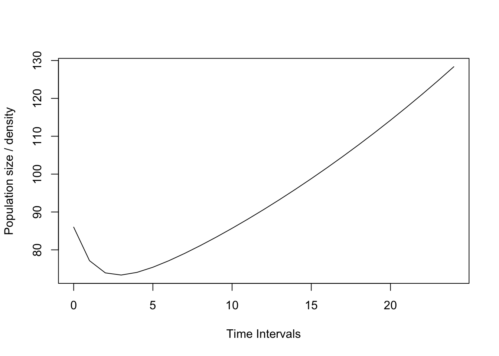

Lepanthes rubripetala
BIOL4558
Agosto 2021
APPENDIX S1
- R code for figures
- This appendix provides R code for producing the figures included in the main manuscript.
- Install the library using install.packages() or by downloading from http://cran.R-project.org
Load the library
library(popdemo)
library(popbio)Lepanthes is one of the largest genera of the Orchidaceae with >1200 species, found only in the Neotropics.
Here is photo of the flower of Lepanthes rubripetala,

Lepanthes rubripetala
A population of Lepanthes rupestris, those of Lepanthes rubripetala growth in the same way (on rocks or trees), so these groups of individuals are discrete and may be seperated by large distances.
Lepanthes population
Lectura para Lunes
Deben leer el siguiente manuscrito para lunes, habrá prueba corta sobre este manuscrito.
Tremblay, Raventos Ackerman. Habrá un quiz de comprobación de lectura al principio de la clase.
Lepanthes rubripetala population #3
How to construct a matrix in R
R3=matrix(c(
0.43, 0, 0, 0.14,
0.38, 0.84, 0, 0,
0, 0, 0.51, 0.15,
0, 0.14, 0.43, 0.84
), byrow=TRUE, ncol=4)
Lrub1=R3
Lrub1## [,1] [,2] [,3] [,4]
## [1,] 0.43 0.00 0.00 0.14
## [2,] 0.38 0.84 0.00 0.00
## [3,] 0.00 0.00 0.51 0.15
## [4,] 0.00 0.14 0.43 0.84Two problems need to be evaluated before analysis
Ergodicity (the condition that regardless of the initial stage structure, the asymptotic growth rate will be the same)
Irreducibility (the condition that the transitions from all stages to all other stages are possible),
failure to meet both of these conditions which may severely impact matrix structure and analyses (Stott et al., 2010a).
You can test this with the following functions from “popdemo”.
isErgodic(Lrub1, digits=10, return.eigvec=FALSE)## [1] TRUEisIrreducible(Lrub1)## [1] TRUElambda(Lrub1)
Here is the theoretical life cycle of the species
Theoretical life cycle
Reality of the data collection
However the data from this matrix is limited because seeds and fungy infection cannot be evaluated in the field, because seeds are too small and there is no quick technique in the field to detedct the symbiotic fungi.
This matrix is size-based, with medium fecundity. The size classes are as follows: - 1: Plantula - 2: Juveniles - 3: A0: non-reproductive adults - 4: A+: reproductive adults
#FIGURE 1: POPULATION PROJECTION #
#This figure is designed to be 3.5” by 3.5” #(Check size of plot window using ‘par(din)’). # # #Set margins: par(mar=c(5,4,1,1))
#Create a population vector. This one is biased towards adults.
n0 <- c(0, 0, 2, 0)Now project the population for x years in the future.
Project the orchid PPM and population vector. In this case, we are projecting for 24 time intervals. The orchid interval is one month, so this projection is for 2 years. We use the function ‘project’.
pr1 <- project(Lrub1, vector=n0, time=24)
#Plot the projection. This uses an S3 plotting
#method for projections. For info, see '?plot.projection'.
plot(pr1)
Primitive Matrix
For a primitive matrix (see below), the long-term growth rate is the real part of the first dominant eigenvalue of the PPM.
eigs <- eigen(Lrub1)
eigs## eigen() decomposition
## $values
## [1] 1.0296288+0.000000i 0.7709252+0.000000i 0.4097230+0.050035i
## [4] 0.4097230-0.050035i
##
## $vectors
## [,1] [,2] [,3] [,4]
## [1,] 0.2004457+0i -0.1598129+0i 0.6765605+0.0000000i 0.6765605+0.0000000i
## [2,] 0.4016762+0i 0.8791759+0i -0.5895339-0.0685543i -0.5895339+0.0685543i
## [3,] 0.2478274+0i -0.2237269+0i 0.2618588-0.2310360i 0.2618588+0.2310360i
## [4,] 0.8585216+0i -0.3891732+0i -0.0979901+0.2417980i -0.0979901-0.2417980ilambdamax <- Re(eigs$values[1])
lambdamax## [1] 1.029629Stable Stable Stage distribution
The stable demographic structure of the population is equal to the dominant right eigenvector, which is the absolute value of the real part of the first eigenvector.
This is the expected proportional distribution among the different stages IF the population attains a sable structure.
w <- stable.stage(Lrub1)
w## [1] 0.1173246 0.2351086 0.1450580 0.5025088Note that the package popbio provides functions ‘lambda’ and ‘stable.stage’ that will provide these also.
For more info on projecting population dynamics, see demo(projection).
TRANSIENT DYNAMICS
Fig. 2a: Population-specific transient dynamics # This figure is designed to be 3.5” by 3.5” (Check size of plot window using ‘par(din)’).
Set margins: par(mar=c(10,4,1,1))
Create 2 population vectors. One is adult- biased, and it amplifies. One is juvenile- biased and it attenuates.
n0.amp <- c(1000,1,1,1)
n0.att <- c(1,1,1,1000)
Project these vectors using the project function. We are standardising the matrix using ‘standard.A=T’ to remove effects of asymptotic dynamics. This means that the projection has a long-term growth rate of unity, i.e. it does not grow or decline in the long-term. We also standardise the population vector to sum to 1 using ‘standard.vec=T’. These standardisations make it easier (and fairer) to compare between models with different population sizes, and different long-term growth rates. pr2.1 <- project(Lrub1, vector=n0.amp, time=156, standard.A=T, standard.vec=T) pr2.2 <- project(Lrub1, vector=n0.att, time=156, standard.A=T, standard.vec=T)
Plot the amplification projection and label it plot(pr2.1, ylim=c(0.4,1), log=“y”, cex.axis=0.8) text(52, pr2.1[51], “amplification”, adj=c(1,-0.5), cex=0.8) maxamp(Lrub1, vector=n0.amp) reactivity(Lrub1,vector=n0.amp) inertia(Lrub1,vector=n0.amp)
Calculate the transient dynamics of the amplification projection reac <- reactivity(Lrub1, vector=n0.amp) maxamp <- maxamp(Lrub1, vector=n0.amp, return.t=T) upinertia <- inertia(Lrub1, vector=n0.amp)
Add points on the projection for amplification and label them points(c(1,maxamp\(t,31), c(reac,maxamp\)maxamp,upinertia), pch=3, col=“red”) text(1, reac, expression(bar(P)[1]), adj=c(-0.3,0.5), col=“red”, cex=0.8) text(maxamp\(t, maxamp\)maxamp, expression(bar(P)[max]), adj=c(0.1,-0.5), col=“red”, cex=0.8) text(31, upinertia, expression(bar(P)[infinity]), adj=c(0.1,-0.5), col=“red”, cex=0.8)
Add in the second projection using the ‘lines’ command and label it lines(0:50, pr2.2) text(52, pr2.2[51], “attenuation”, adj=c(1,1), cex=0.8)
Calculate the transient dynamics of the attenuation projection firstep <- firststepatt(Lrub1, vector=n0.att) maxatt <- maxatt(Lrub1, vector=n0.att, return.t=T) lowinertia <- inertia(Lrub1, vector=n0.att)
firststepatt(Lrub1, vector=n0.att) maxatt(Lrub1, vector=n0.att, return.t=T) inertia(Lrub1, vector=n0.att)
Add points on the attenuation projection and label them points(c(1,maxatt\(t,31), c(firstep,maxatt\)maxatt,lowinertia), pch=3, col=“red”) text(1, firstep, expression(underline(P)[1]), adj=c(0,-0.6), col=“red”, cex=0.8) text(maxatt\(t, maxatt\)maxatt, expression(underline(P)[min]), adj=c(0.1,1.5), col=“red”, cex=0.8) text(31, lowinertia, expression(underline(P)[infinity]), adj=c(0.1,1.5), col=“red”, cex=0.8)
Add in a dotted line at y=1 lines(c(0,50),c(1,1),lty=2)
Fig. 2b: Transient bounds This figure is designed to be 3.5” by 3.5” (Check size of plot window using ‘par(din)’).
Set margins: par(mar=c(5,4,1,1))
Transient bounds result from projections of the stage-biased dynamics of the model. When using the function ‘project’, the stage-biased model dynamics are projected automatically if no population vector is specified. We can do this for the orchid, using a standardised matrix like before: pr2 <- project(Lrub1, standard.A=TRUE, time=156)
Now we need to plot these population dynamics. The S3 method for projections automatically plots all stage-biased projections: plot(pr2, log=“y”, cex.axis=0.8, ylim=c(0.4,1.5))
Add in a dotted line at y=1 lines(c(0,156), c(1,1), lty=2)
Calculate the bounds on transient dynamics for the orchid. This is also done automatically if no population vector is specified. reacb <- reactivity(Lrub1) firstepb <- firststepatt(Lrub1) maxampb <- maxamp(Lrub1, return.t=T) maxattb <- maxatt(Lrub1, return.t=T) upinertiab <- inertia(Lrub1, bound=“upper”) lowinertiab <- inertia(Lrub1, bound=“lower”)
reactivity(Lrub1) firststepatt(Lrub1) maxamp(Lrub1, return.t=T) maxatt(Lrub1, return.t=T) inertia(Lrub1, bound=“upper”) inertia(Lrub1, bound=“lower”)
Add points on the projection and label them points(c(1,1,maxampb\(t,maxattb\)t,31,31), c(reacb,firstepb,maxampb\(maxamp,maxattb\)maxatt,upinertiab,lowinertiab), pch=3,col=“red”) text(1, reacb, expression(bar(rho)[1]), adj=c(-0.5,0.5), col=“red”, cex=0.8) text(1, firstepb, expression(underline(rho)[1]), adj=c(-0.5,1.5), col=“red”, cex=0.8) text(maxampb\(t, maxampb\)maxamp, expression(bar(rho)[max]), adj=c(0.1,-0.5), col=“red”, cex=0.8) text(maxattb\(t, maxattb\)maxatt, expression(underline(rho)[min]), adj=c(0.1,1.5), col=“red”, cex=0.8) text(31, upinertiab, expression(bar(rho)[infinity]), adj=c(0.1,-0.5), col=“red”, cex=0.8) text(31, lowinertiab, expression(underline(rho)[infinity]), adj=c(0.1,1.5), col=“red”, cex=0.8)
Amplification bounds result from the projection of a population with 100% stage x individuals. Attenuation bounds result from the projection of a population with 100% stage 1 individuals.
FIGURE 3: TRANSFER FUNCTIONS
Fig. 3a: Transfer function of asymptotic growth
This figure is designed to be 3.5” by 3.5” (Check size of plot window using ‘par(din)’).
Set margins: par(mar=c(5,4,1,1))
Create a transfer function using ‘tfa’. The perturbation structure is determined by two vectors d and e. The matrix d%*%t(e) gives the structure, where nonzero elements in this matrix are the elements of the PPM to be perturbed. The relative size of entries in this matrix are the relative sizes of perturbation to those elements. In this case, we are perturbing element [5,4]. We are going to look at the effect of perturbing up to 0.25. The largest biologically reasonable perturbation is about 0.12. tf1 <- tfa(Lrub1, d=c(1,0,0,0), e=c(0,0,1,0), prange=seq(0,0.25,0.01))
Now we plot this using an S3 method for transfer functions (for information see ‘?plot.tfa’). plot(tf1, cex.axis=0.8)
Now we’re going to add in the sensitivity tangent. This has an intercept of lambda-max, and a slope of the sensitivity of the same transfer function. Calculate lambda-max of the desert tortoise PPM: lambda <- Re(eigen(LaeliaZ1)$values[1])
Calculate the sensitivity using the function ‘tfsens’: sens1 <- tfsens(Lrub1, d=c(0,0,0,1), e=c(0,0,1,0))
Now add in the line, specifying the correct intercept and slope: abline(lambda, sens1, lty=2, col=“red”)
Fig. 3b: Transfer function of population inertia
This figure is designed to be 3.5” by 3.5” (Check size of plot window using ‘par(din)’).
Set margins: par(mar=c(5,4,1,1))
The process is very similar to above. We need to specify a PPM, perturbation structure and perturbation range. For inertia we either have to specify a population vector using the ‘vector’ argument, or the bound to be calculated using the ‘bound’ argument. Create a population vector: n0 <- c(1,8,13,21)
tf1 <- tfa(Lrub1, d=c(0,0,0,1), e=c(0,0,1,0), prange=seq(0,0.25,0.01))
Now calculate the transfer function using inertia.tfa: tf2 <- inertia.tfa(Lrub1, vector=n0, d=c(0,0,0,1), e=c(0,0,1,0), prange= seq(0,0.25,0.01))
Plot the transfer function using the same S3 method as before: plot(tf2, cex.axis=0.8, ylim=c(3.9,4.43))
The sensitivity tangent for transfer function of inertia has an intercept of equal to the relevant inertia (either using the same population vector, or the correct bound), and a slope of the sensitivity of the same transfer function. Calculate inertia of the desert tortoise PPM using the population vector: inertia <- inertia(Lrub1, vector=n0)
Calculate the sensitivity using the function ‘inertia.tfsens’: sens2 <- inertia.tfsens(Lrub1, vector=n0, d=c(0,0,0,1), e=c(0,0,1,0), tolerance=1e-5)
(Here the ‘tolerance’ has had to be lowered to avoid calculation error: try the function without that argument and it will have trouble running)
Now add in the line, specifying the correct intercept and slope: abline(inertia, sens2, lty=2, col=“red”)
FIGURE 4: TRANSFER FUNCTION MATRIX
This figure is designed to be 7” by 7” (Check size of plot window using ‘par(din)’).
This is a nice, easy plot because the function does it all for you. The functions ‘tfmat’ and ‘inertia.tfmat’ calculate a transfer function for every PPM element. They are saved as arrays of values. The functions are customisable: see ‘?tfmat’ and ‘?inertia.tfmat’.
Create the array for inertia, using a specific population vector: n0 <- c(48, 16, 12, 10) tfmat <- inertia.tfamatrix(Lrub1, vector=n0)
…and plot it! plot(tfmat)
n0 <- c(48, 16, 12, 10) tfmat <- tfamatrix(Lrub1)
…and plot it! plot(tfmat)